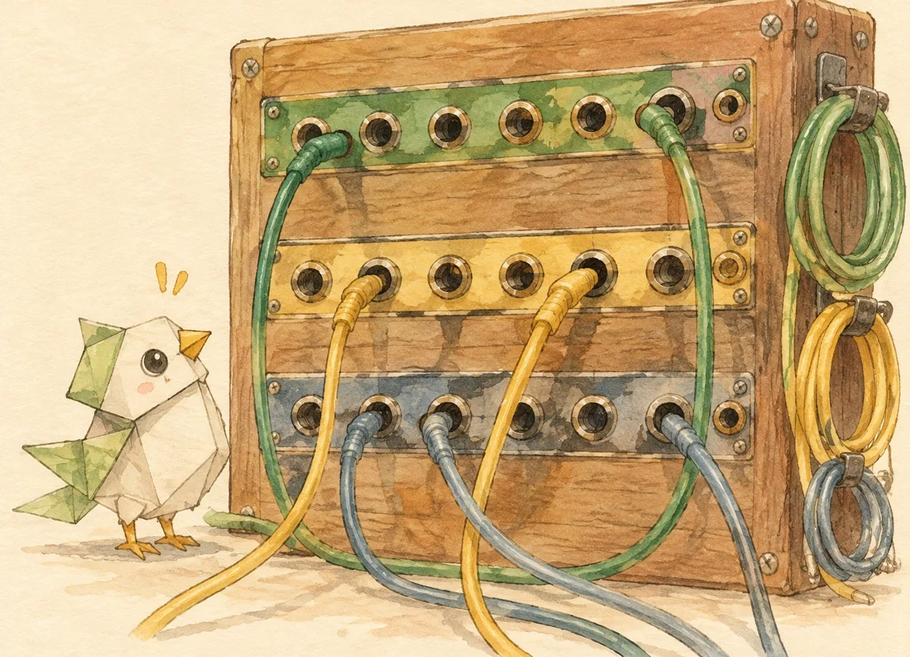
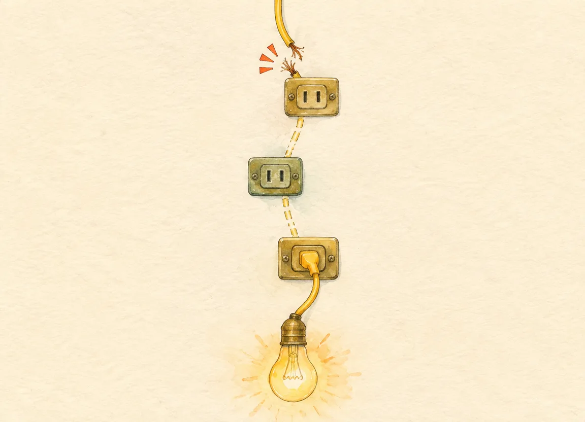
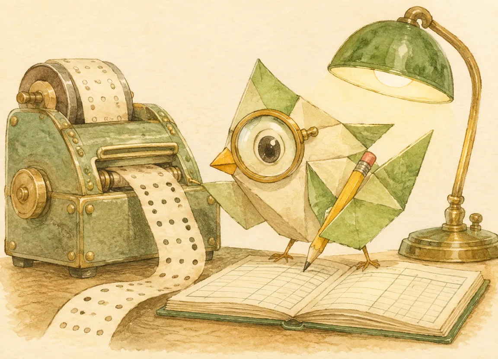

00:00
写死的模型是单点故障
在谈路由之前先谈依赖：一个写死在代码里的 baseUrl，等于把整栋楼的安全拴在一根电话线上
先把最常见的那种代码摆在桌上——它没有名字，因为它太常见了：
def ask(prompt): r = requests.post("https://api.someone.com/v1/chat/completions", headers={"Authorization": "Bearer sk-..."}, json={"model": "gpt-x", "messages": [...]}) return r.json()["choices"][0]["message"]["content"]
它work得如此之好，以至于你写完那天就忘了它的存在。然后某个凌晨——参照本篇开头的事故卡——它死了。而它死的时候，你的整个 Agent 跟着一起死，因为调用方根本无处可去：模型名、地址、密钥、协议，全都焊死在这一行里。这不是「能不能写出高质量回答」的问题，是可用性问题：任何长跑的系统，模型层一定会出事故；问题只在你有没有备胎，以及换胎要多久。
把模型从「依赖」改成「插拔资源」
fuel-agent 的模型接入层是这么定位自己的——models.js 文件头的注释原文：
「插拔资源」四个字拆开是三条硬规矩。第一，接入配置与调用逻辑分离：地址、密钥、协议、模型 ID 是一份纯数据（配置表），发请求、解析回复是另一套代码（适配器）。换模型 = 换数据，不换代码。第二，每个模型自带元数据：不只记「怎么连」，还记「会什么、多少钱」。第三，测试与生产走同一条代码路径——连通性测试就是发一条真的小请求，不是另写一个假检查。
看真实代码。配置表里每家服务商是一条记录，adapter 字段指向共用协议实现——注意「字节豆包」和「通义千问」的 adapter 都是 openai，因为它们都提供 OpenAI 兼容端点：
const PROVIDERS = { openai: { name: "OpenAI 兼容", baseUrl: "https://api.openai.com/v1", auth: "bearer", adapter: "openai", needsKey: true }, anthropic: { name: "Anthropic Claude", baseUrl: "https://api.anthropic.com/v1", auth: "x-api-key", adapter: "anthropic", needsKey: true }, dashscope: { name: "阿里通义千问", baseUrl: "https://dashscope.aliyuncs.com/compatible-mode/v1", auth: "bearer", adapter: "openai", needsKey: true }, ollama: { name: "本地 Ollama", baseUrl: "http://localhost:11434/v1", auth: "none", adapter: "openai", needsKey: false }, // gemini / ark / moonshot / custom ... 共 9 家 };
而通过 add() 入册的每个模型，元数据长这样（store.js 的注释原文：价格「预设里带已知价格，手填模型默认 0（即不计费）」）：
const model = { id: uid("m"), provider: cfg.provider, model: cfg.model, baseUrl: cfg.baseUrl || (PROVIDERS[cfg.provider]?.baseUrl ?? ""), caps: cfg.caps || { vision: true, text: true, reasoning: false }, price: cfg.price || preset?.price || { in: 0, out: 0 }, // 美元/百万token enabled: true, status: "untested", latency: null, calls: 0, tokensIn: 0, tokensOut: 0, cost: 0, // 用量账本随人走 };
总机的六个部件
把这台总机拆开摆在桌上，一共六个部件。后面六章各解剖一到两个——先记住整体形状：
FIG. 01 · 总机六件套——从一次请求进线到一笔账入册，每个部件只做一件事
纯数据：地址、鉴权方式、能力、单价。换模型不动代码，加模型只加一行。
把统一的内部消息格式翻译成各家的方言。发请求、读回复、抛错误，全在这里。
听忙音还是空号：决定「重试」还是「换人」。整个容错体系的总开关（第五章）。
按角色排优先级链，逐级下坠，永不失败的内置引擎守链尾（第四、五章）。
把「老占线的号码」记在小本上，冷却期内不再白拨，到期自动放行（第五章）。
每一通电话的台账：走了谁、几毫秒、几个 token、几美分、有没有回退（第六、七章）。
链尾那位「永不失败」的接线员
六个部件里最容易被轻视的是内置模拟引擎（builtin-mock）——一个不出网、本地应答的假模型。它在配置表里的自我介绍（store.js 注释原文）：
它有两重身份。开发期，它是空号录音：你还没填任何 API key，整个产品照常能跑通全流程，界面不是一具白屏。生产期，它是每一条回退链的最后一环——所有真模型都挂掉时，请求落到它头上，拿回一句明示「模拟」的回复（第五章会看到 resolveChain() 怎么把它钉在链尾）。「宁可明示模拟，不许静默失败」是设计立场，不是技术偷懒：模拟回复会让下游明确知道「这不是真模型的判断」，而一句从死渠道里捞出来的报错堆栈，往往被当成正常回答吞下去。
下一章先解剖 P2：模型还没挂之前，你的请求得先过语言关。
00:01
协议适配器：三家三种方言
同一个「发一张图给模型看」，在 OpenAI、Anthropic、Gemini 那边是三封完全不同的电报
总机接线员的第二项基本功是外语。你要接九家服务商，但不能把九套协议各写一遍散落在业务代码里——否则换一家等于动一次手术。标本的做法是把「内部怎么说话」和「外面怎么说话」切开：内部只有一种格式，models.js 头注释原文：
{ role: 'user' | 'assistant', parts: [{ type:'text', text } | { type:'image', dataUrl }] }
各适配器负责把它翻译成自家协议。
四种方言，四个适配器，全在同一个 Adapters 对象里，每个只实现三件事：test()（连通性测试）、listModels()（拉模型清单）、chat()（真正推理）。同一条「看图说话」的消息，三个 chat() 翻出来的电报长这样：
| 内部格式 | OpenAI 兼容 | Anthropic | Gemini |
|---|---|---|---|
| 文字块 | {type:"text", text} | {type:"text", text} | {text} |
| 图片块 | {type:"image_url", image_url:{url}} | {type:"image", source:{type:"base64",...}} | {inline_data:{mime_type, data}} |
| 角色叫法 | user / assistant | user / assistant | user / model |
| 回复在哪 | choices[0].message.content | content[].text 拼接 | candidates[0].content.parts[] |
| 用量字段 | prompt_tokens / completion_tokens | input_tokens / output_tokens | promptTokenCount / candidatesTokenCount |
表里每一格都核对过真实代码——最后两行尤其重要：回复解析和用量记账，每个适配器都要各写一遍。Gemini 连角色名都不一样：assistant 叫 model。这些差异琐碎、无聊、每一条都是真金白银的坑——漏掉哪条，报错信息会漂亮得完全看不出是翻译问题。
收账也要翻译：一个函数统一三家字段名
三家汇报用量的字段名完全不同，账本却只有一本。标本用一个 12 行的收敛函数把方言归一（models.js L414–430，有删节）：
function tokensOf(usage) { if (!usage || typeof usage !== "object") return { in: 0, out: 0 }; const pick = (...keys) => { for (const k of keys) { const v = Number(usage[k]); if (Number.isFinite(v) && v > 0) return v; } return 0; }; return { // OpenAI: prompt_tokens / Anthropic: input_tokens / Gemini: promptTokenCount in: pick("prompt_tokens", "input_tokens", "promptTokenCount"), out: pick("completion_tokens", "output_tokens", "candidatesTokenCount"), }; }
注意 pick 的顺序：把自家的字段名排在前面，非零才认。上游哪天改名，链子后端兜着。归一层是适配器模式的隐藏收益——方言只活在这 813 行里，出了这个文件，整个系统只认识 {in, out}。
三个值钱的细节：都是踩过坑才有的
适配器层真正动人的是那些「没有就不会坏、有了才不烦」的细节。摘三处真实代码：
- 老版 Ollama 的退路。
listModels()先打标准的/v1/models，失败时检查地址是不是本地 Ollama（/:11434|localhost|127\.0\.0\.1/），是就退到原生/api/tags再试一次（L102–109）。注释原文：「老版本 Ollama 不实现 /v1/models」。一行 if，救活一整个本地模型生态。 - 浏览器直连的投名状。Anthropic 适配器的每个请求都带一个特别老实的头：
anthropic-dangerous-direct-browser-access: "true"（L171、L189）。官方要求浏览器直连必须显式自认风险，注释也没回避：「生产环境应改为自建代理转发」。诚实写在协议里。 - 错误信息的 180 字截断。
readErr()把响应体里的错误挖出来拼进异常消息，但只留 180 个字符（L37）——中转站的报错体动辄塞一整页 HTML，不截断的话，一条错误日志能撑爆一屏。
还有一处「让用户少打一个字」的体贴：guessCaps()（L317）从模型 ID 用正则猜能力——ID 里带 vl|vision|4o|gemini|claude-(3|4|5) 的猜支持视觉，带 o1|-r1|thinking|deepseek-r 的猜会推理。注释原文把界限划得很清楚：
这句注释值得单独裱起来：启发式的道德不在于猜得多准，而在于猜错时要便宜。同样的正则如果用来「猜错就拒绝服务」，就成了灾难；用来「预填一个可改的复选框」，就成了体贴。
适配器只负责把话说到、把账记对。至于对面那头是接了还是忙音、忙音之后该重拨还是该换号——那是错误分类的事，也是整台总机最容易被写错的一段。
00:02
错误要分类：不同错不同药
挂掉不是一种病，是一组病。限流该退避重试，鉴权失败重试一百次也是白搭——先分诊，再开药
总机接线员听三秒钟就知道该重拨还是该换号。代码里的「听三秒」叫错误分类，它是整个容错体系的总开关——分错类，后面的重试、回退、熔断全都在给错误的药方买单。标本 A 的分诊台是一个 60 行的正则函数，原文注释先把利害讲透了：
function classifyError(msg) { const s = String(msg || ""); if (/429|rate.?limit|too many requests|quota|throttl/i.test(s)) return "rate_limit"; if (/abort|timeout|超时|ETIMEDOUT|ECONN|ENOTFOUND|network|fetch failed|failed to fetch|socket/i.test(s)) return "transient"; if (/\b5\d{2}\b|internal server|bad gateway|service unavailable|overload/i.test(s)) return "transient"; if (/401|403|unauthor|forbidden|invalid.*api.?key|api.?key.*invalid|认证|鉴权/i.test(s)) return "auth"; if (/404|not found|no such model|model.*not.*exist|模型不存在/i.test(s)) return "not_found"; if (/400|422|invalid.*request|context.*length|too long|max_tokens/i.test(s)) return "bad_request"; return "unknown"; }
读这段正则有三个值得停顿的地方。其一，顺序即优先级：429 排在 5xx 前面，因为「配额超限」虽然顶着 4xx 的帽子，性质却是「等等就好」；若把 5xx 检查放前面没问题，但把 auth 放到 5xx 后面就会漏——有的中转站过载时把 403 也包在 502 响应体里。其二，中英文混合匹配：超时、认证、鉴权、模型不存在都在正则里——你的错误可能来自任何一层，包括自己人写的中文报错。其三，unknown 不是兜底药箱，是分诊台的诚实：认不出就明说认不出（后面会看到，unknown 的处置和 transient 一样保守，但归因会被如实记进台账）。
分诊之后开药。药方在配置层，只有两行——这才是全文最贵的五十个字：
// 只有这两类错误值得在同一模型上重试；其余重试也是白重试 const RETRYABLE = new Set(["rate_limit", "transient"]);
| 类别 | 典型症状 | 药方 | 理由 |
|---|---|---|---|
rate_limit | 429、quota、throttled | 退避重试 | 对面还活着，只是这会儿人多 |
transient | 超时、断连、5xx | 退避重试 | 抖动大概率自愈 |
auth | 401 / 403、密钥无效 | 换人 | 重拨一百次也是空号 |
not_found | 404、模型不存在 | 换人 | 号码是空的 |
bad_request | 400 / 422、上下文超长 | 换人 | 换别的模型可能就接得下 |
unknown | 谁也看不懂的报错 | 换人 + 如实记录 | 不认识的症状按坏消息处理 |
第二套口径：另一台总机怎么分类
标本 B（cc-probe 探针）是另一套班子写的，同一个问题的答案不太一样。它的重试策略只有一行判断（engine.py · probe_with_retry，L393）：
if (not ok and res.get("error_kind") not in ("auth", "quota", "forbidden")): # 除了这三种，剩下全部自动重试一次
fuel-agent 是正向白名单：只重试 rate_limit 和 transient，其余一概换人。cc-probe 是反向黑名单：只不重试 auth/quota/forbidden，其余全试一次——包括 not_found。同一个世界，两种正确答案。它们的分歧点不在技术，在场景：
| fuel-agent（产品运行时） | cc-probe（渠道探针） | |
|---|---|---|
| 目标 | 让用户尽快拿到答案 | 让账本尽量准确 |
| 重试策略 | 正向白名单（2 类） | 反向黑名单（排除 3 类） |
| not_found 重试？ | 否——立刻换模型 | 是——多打一次确认不是抖动 |
| 代价 | 可能漏掉「其实只是抖动」的模型 | 每次探测多花一次请求的时间 |
| 换模型的动力 | 强（用户就在等） | 弱（没人等，准确性优先） |
所以「重试哪几类错误」这个问题没有标准答案，只有口径。任何声称「业界最佳实践就是这么分」的文章，都在替你省掉一个你本该自己做的决定：你这个系统里，慢和错哪个更贵？
三个真实的分类现场
分类器写起来容易，实战里最见真章。以下三条全部来自 probe.db 的 results 表，原文照抄（密钥已由探针脱敏，IP 为真实探测出口）：
| 现场 | HTTP | 报错原文（节选） | 探针判 | 真相 |
|---|---|---|---|---|
| ① 503 的壳 channel 47 · gemini-3.6-flash | 503 | {"error":{"code":"model_not_found",...}} | server→ 重试 | 模型根本不存在。重试是白等；该做的是换模型 |
| ② 500 的墙 channel 71 · claude-sonnet-4-6 | 500 | {"code":"convert_request_failed","message":"not implemented"} | server→ 重试 | 中转站不支持协议转换。冷启动也好、过载也好都不成立，第二次一模一样死在 511ms |
| ③ 403 的判词 channel 47 · gpt-oss-20b | 403 | 该ip已被封禁，原因：bulk probe guard: ip … requested 5 distinct models in 60s (offense 3) | auth→ 立即放弃 | 归因错了，但处置对了。真实原因是探测太密触发了反滥用封禁，不是密钥问题 |
三条各有一课。
现场①是分类器的经典盲区：只看状态码，不看响应体里的 code。503 是「服务不可用」的标准脸，但套子里装的是 model_not_found——这是一个装错信封的 404。这类错误在聚合中转站里极其常见，因为中转站自己不认哪个模型存在，得回源问，回源失败时它只能先给你个 503。修法很朴素：先读 body 的 error.code，再读状态码，两者矛盾的以语义为准。
现场②是白重试的活标本。探针的日志完整记了两次尝试：第 1 次 469ms 收到 500，第 2 次 511ms 收到同一个 500，request id 都不同——说明对面不是缓存了错误，是真的每次都走到同一行 not implemented。convert_request_failed 是「这个中转站不支持把 OpenAI 协议转成 Anthropic」的明确宣言，它是配置性失败，重试一百次也是同一结果。这类错误该单独成类（unsupported），药方是「换渠道」而不是「重试」。
现场③最妙：归因错了，处置对了。探针把它归为 auth（403 → 鉴权），但原文写得很清楚：IP 因为 60 秒内请求 5 个不同模型被反滥用系统封了，offense 3 说明已经是第三次犯。归因确实错了——但这错归因带来的处置（立即放弃、不重试）恰好是对的，因为对反滥用封禁，再打一次只会加重罪状。这引出一个比「分类准不准」更深的教训：分类的价值在决定动作，不在于命名正确。如果分类器的类别名和动作是松耦合的（auth → 换人），那么即使名字错，只要动作对，系统仍然健壮；反过来说，一个 100% 命名正确但动作错配的分类器，会精确地做错每一次。
offense 3 这个字段本身是金矿——它告诉你能不能重试，以及重试的代价。可惜分类器没读它。真实世界的错误结构里，这种「元数据比状态码更有用」的字段到处都是（retry-after、reset_time、x-ratelimit-remaining）。读它们，比背状态码表有用得多。① 分类器判定 —
② 处置
③ 现实的代价
error.code 纳入判定后的行为变化——这就是 503 壳包 model_not_found 的修法。00:03
按角色路由，不是全局一个模型
「识别餐盘」和「编排一周计划」不是同一种活儿。一条全局优先级链，等于让总机把所有的来电插进同一排插孔
很多 Agent 的路由配置长这样：fallbacks = ["gpt-4o", "claude", "qwen"]。一条链，所有请求排着队。这在「只有一个模型」的时代是合理的抽象，但在多模态 Agent 里立刻出问题——图像任务和文本任务对模型的要求根本不一样。一个只支持文本的模型排进图像链，它不是在回退，它是在拒绝服务。标本 A 把它拆成了三条链，一条一个角色（store.js · L752，有删节）：
/** * 路由：三类任务各配一条「优先级链」，而不是单一模型。 * 参考 LiteLLM 的 fallbacks 数组 —— 链上的模型按顺序尝试，前面的不可用就往后走。 * 写成数组而不是单个 ID，是因为真实场景里一个模型挂掉需要多级兜底， * 而且「首选贵模型 + 次选便宜模型」本身就是常见的成本策略。 */ const DEFAULT_ROUTE = { vision: ["builtin-mock"], // 图像判断：识别餐盘、估算热量与宏量 plan: ["builtin-mock"], // 计划编排：生成与重排一周饮食训练 chat: ["builtin-mock"], // 对话问答：日常咨询与计划解释 };
注意那条注释的第二半——「首选贵模型 + 次选便宜模型」本身就是常见的成本策略。这句话比它看起来重要：路由不只是容错，它还是定价权。同一件事，先拿贵模型打头阵保证质量，挂了再落到便宜模型保证可用；反过来（先用便宜的，不行再升贵）也合法，取决于你更怕质量掉还是更怕账单爆。一条链的顺序，就是一次产品决策，而不是一次技术配置。

「能力」是链上的硬门槛
如果三条链只是三份名单，那问题还在：用户手动把纯文本模型塞进 vision 链怎么办？标本的答案是让能力成为漏斗上的筛子（models.js · resolveChain() · L657–670，有删节）：
resolveChain(role) { const route = this.route(); const out = []; const push = (m) => { if (m && !out.some((x) => x.id === m.id)) out.push(m); }; for (const id of route[role] || []) { const m = this.byId(id); if (!m || !m.enabled) continue; if (role === "vision" && !m.caps?.vision) continue; // 纯文本模型不能接图像任务 push(m); } push(this.byId(MOCK_MODEL.id)); // 最终兜底：永不失败 return out; }
这段代码里藏着三个决定，每一个都值得单独说：
- 能力过滤是静默的，不是报错的。不支持的模型被跳过，不抛异常、不弹警告。因为「这个模型不会看图」不是错误，是事实——链上还有下一个。
- 去重用 ID，不用对象。
out.some(x => x.id === m.id)——同一个模型被用户手动写两次，只留一次。链是优先级序列，不是调用次数。 - 兜底的 push 在最外层，无条件执行。不管前面有多少个模型被过滤光，模拟引擎一定在链尾。这就是 ch1 说的「永不失败的接线员」在代码里的落点。
别让链变空：删除、迁移、老数据
配置是会腐化的。用户删掉一个模型，它可能在三条链里各躺着一次；留着的空位就是死链——界面显示「这个角色有链」，实际指向一个不存在的 ID。标本的 remove() 专门处理这个（models.js · L590–610，有删节）：
// 从所有角色的回退链里摘掉，避免留下指向空模型的死链 const route = this.route(); let changed = false; for (const k of Object.keys(route)) { if (route[k].includes(id)) { route[k] = route[k].filter((x) => x !== id); changed = true; } } if (changed) { // 摘掉最后一个模型后链路会变空。空链在界面上表现为「没有选中任何模型」， // 既难理解也没意义 —— 回落成默认链（内置引擎），语义等价且状态可读。 for (const k of Object.keys(route)) { if (!route[k].length) route[k] = [...(DEFAULT_ROUTE[k] || [MOCK_MODEL.id])]; } Store.write(KEYS.route, route); }
「空链在界面上表现为『没有选中任何模型』，既难理解也没意义」——这句注释是产品思维的证据。技术上，空链完全合法：遍历零个元素，然后到链尾兜底。但它会在 UI 上留下一个无法解释的空白状态，用户会以为坏了。所以代码主动把它规范化回默认链，并明确注释了动机是「状态可读」，不是「防止崩溃」。数据规范化不只为了程序不炸，也为了人能读懂。
还有一层是时间：老版本存下的路由数据长什么样？早期版本用单字符串（不是数组），以及一个全局 route.fallback 字段。这两个格式都得认得（models.js · route() · L617–628）：
for (const role of ["vision", "plan", "chat"]) { const v = raw[role] ?? DEFAULT_ROUTE[role]; out[role] = (Array.isArray(v) ? v : [v]).filter(Boolean); // 单字符串 → 数组 // 早期版本用 route.fallback 表示全局兜底，迁移成追加到每条链尾 const legacy = raw.fallback; if (legacy && !out[role].includes(legacy)) out[role].push(legacy); }
「迁移成追加到每条链尾」——旧字段不是被丢弃，而是被赋予了新语义下的合理位置。这类迁移策略值得抄：旧数据不删，找它在新结构里的等价位置。删掉的后果是用户升级后发现「我配的那个兜底模型不见了」，而他们大概率不会再来提 issue。
链装配好了，接下来是最难的一段：请求落到链上，具体怎么走。下一章逐行走读 invoke()——那是整个接入层的心脏。
00:04
回退的两层包装
重试包在换模型里面，而不是反过来——这个顺序一旦写反，代价是数量和等待时间的双重爆炸
现在请求已经站在回退链的门口。剩下的问题只有一个，却是整台总机最贵的问题：先重试还是先换人？答案不是二选一——是嵌套。标本的注释直接交代了出处（models.js · L705–712）：
function_with_fallbacks（换模型）包住 function_with_retries（同模型重试）
即：先在一个模型上对「瞬时错误」退避重试，重试完还是不行才换下一个模型。
为什么是这个顺序？把两层反过来算一遍就明白了。设链上有 3 个模型，每个模型最多重试 2 次：
| 包装方式 | 最坏情况请求数 | 失败时的等待结构 | 后果 |
|---|---|---|---|
| 重试包在换人里（正确） | 3 × 3 = 9 | 模型 A 重试完 → 模型 B 重试完 → 模型 C | 某个模型短暂抖动能被自己吸收，不惊动别人 |
| 换人包在重试里（错误） | 3 × 3 = 9 | 整条链跑一轮 → 再跑一轮 → 再跑一轮 | 每个模型都被打 3 次，一次网络抖动会把全链震三遍 |
请求数一样，灾难在别处：错误的那版会把「本来就快好的模型」和「真挂了的模型」一视同仁地反复打。更要命的是熔断器——如果熔断计数在整链重试里累计，一次抖动就能把三个健康模型同时打入冷却。而下文会看到，熔断计数必须是按模型的。
invoke() 逐行走读
完整函数 87 行，这里只留骨架，但关键语句一条没删（models.js · L713–800，有删节）：
async invoke(role, req) { const chain = this.resolveChain(role); const t0 = performance.now(); const skipped = [], failures = []; let lastErr = ""; for (let i = 0; i < chain.length; i++) { // ← 外层：逐模型 const m = chain[i]; if (!m.builtin && Health.isCooling(m.id)) { // ← 冷却直接跳过 const st = Health.state(m.id); skipped.push({ id: m.id, label: m.label, leftMs: st.coolingLeftMs, kind: st.lastKind }); continue; } const adapter = Adapters[PROVIDERS[m.provider]?.adapter || "openai"]; let attempt = 0; for (; attempt <= RESILIENCE.maxRetries; attempt++) { // ← 内层：同模型重试 try { const out = await adapter.chat(m, req); Health.note(m.id, true); /* ... 记账、写 CallLog、返回 { fellBack: i > 0, retries: attempt, skipped, failures } */ return { text: out.text, model: m.label, fellBack: i > 0, retries: attempt, failures }; } catch (e) { const kind = classifyError(msg); lastErr = `${m.label}：${msg}`; // 瞬时错误 → 同一模型退避重试；其余错误 → 立刻换模型，重试没有意义 if (RETRYABLE.has(kind) && attempt < RESILIENCE.maxRetries) { await sleep(backoffMs(attempt)); continue; // ← 不记失败，继续内层循环 } Health.note(m.id, false, kind, msg); // ← 只有走到这里才记一次失败 failures.push({ id: m.id, label: m.label, kind, error: msg, retries: attempt }); break; // ← 出内层，外层换下一个模型 } } } /* 全链失败：写一条 ok:false 的 CallLog，返回失败结构（含 failures / skipped / kind）*/ }
这段代码有四个设计点，摊开说：
- 「可重试」不等于「不记失败」。看两个
Health.note的位置：成功时记一次 good；重试分支 只 sleep 不记，只有真正放弃这个模型时才note(false)。这意味着一次抖动后的成功重试，不会在健康度上留任何污点。反过来如果每次失败都记，一个偶发 429 就能把好模型打冷。 fellBack: i > 0是唯一诚实的回退信号。不是「有没有重试」（retries），而是「最终用的是不是链上第一个」。这两个数字分开记录：重试了但仍是首选模型，和重试到第三个模型才成功，是完全不同的两件事。- 冷却中的模型"留在链里"。这段代码没有把冷却模型从链上删掉——它
continue跳过，并把这条跳过如实记进skipped数组。resolveChain()的注释说明了动机：「这样界面上能看到『它被跳过了』，而不是莫名其妙消失」。 - 失败也要落一条日志。全链失败的收尾照样
CallLog.push({ ok: false, ... })。没成功就不记——那是最常见的埋点漏洞，也是事故复盘时最缺的一页。
退避为什么要加抖动
重试不是「立刻再打一次」。两次失败之间要等，而且越等越久——标本的退避函数只有五行（models.js · L441–445），注释说了一个常被忽略的理由：
/** 指数退避 + 抖动。抖动是为了避免多个角色同时重试造成新的尖峰。 */ function backoffMs(attempt) { const base = Math.min(RESILIENCE.backoffBaseMs * 2 ** attempt, RESILIENCE.backoffMaxMs); return Math.round(base * (0.8 + Seed.rand() * 0.4)); }
参数在配置层：backoffBaseMs: 400、backoffMaxMs: 4000、maxRetries: 2（store.js · L764）。于是等待序列是 400ms → 800ms（封顶 4s），每档再乘 0.8–1.2 的抖动系数。
抖动防的是「惊群」：如果三个角色在同一个 503 后都立刻重试，它们会同时到达，把刚恢复的渠道再打趴一次——这就是「重试风暴」，也是很多中转站限流策略的直接成因（见 ch3 现场③：60 秒 5 个模型就被封 IP）。把重试时间打散在 ±20% 的窗口里，是最便宜的解药。
而 Seed.rand() 而非 Math.random() 这个细节很关键：种子化的随机数让小样的时间轴可以逐像素复现——这正是本章 DEMO 02 能画出确定性时间轴的原因，也是本系列每篇文章的工程底线。

熔断：把「老占线」记在小本上
如果每次请求都要把整条链打一遍才罢休，那一个真死掉的模型会被反复捶打——对双方都不好。熔断器就是那本小本子（models.js · L342–410，注释原文）：
连续失败 allowedFails 次 → 进入冷却；冷却期内跳过该模型，到期自动放行。
持久化到 localStorage，这样刷新页面不会「忘记」某个模型刚刚挂过。
核心是 note() 的两条路径（L374–393，有删节）：
note(id, ok, kind = "", error = "") { const all = this.read(); const h = all[id] || { fails: 0, okCount: 0, failCount: 0, cooldownUntil: 0 }; if (ok) { h.fails = 0; // 成功清零连败 h.cooldownUntil = 0; // 顺手解除冷却 h.okCount = (h.okCount || 0) + 1; } else { h.fails = (h.fails || 0) + 1; h.failCount = (h.failCount || 0) + 1; h.lastKind = kind; h.lastError = String(error).slice(0, 200); if (h.fails >= RESILIENCE.allowedFails) h.cooldownUntil = Seed.clock().getTime() + RESILIENCE.cooldownMs; } all[id] = h; this.write(all); return h; }
几个值得停下的点：
fails与failCount是两个数。前者是连续失败（成功即清零），后者是累计失败（永不清零）。熔断只认连续失败——因为它判断的是「这台机器现在还活着吗」，不是「它历史上出过多少次问题」。累计值留着做健康度评分。- 冷却是一段绝对时间戳，不是布尔。
cooldownUntil存的是「什么时候可以再试」，而不是「现在坏没坏」。这让「到期自动放行」无需定时器：每次读状态时比较until > now就够了（state()里的cooling/coolingLeftMs）。 lastError截断 200 字符。和readErr()的 180 一致——错误体不能无限制地进存储。- 持久化到 localStorage。刷新页面不清零，是因为用户的刷新往往发生在「刚看到报错，想再试一次」的时刻。如果冷却记忆随刷新清空，用户的重试就变成了对故障模型的又一轮捶打。
「半开」怎么实现？代码里没有显式的 half-open 状态——它靠到期后自然放行实现：冷却到期，模型回到链上参与竞争，成功即清零，失败则 fails 继续累加、再次撞线冷却（注意此时 fails 还没被清零，所以下一次失败只需一次就重新冷却）。这是一个比显式三态机更简单的等价实现，代价是「放行后第一次失败就直接重冷」，而不是「先试 N 次」。简单和精确之间的取舍，这里选了简单。
状态台账
cooldownUntil、冷却期内跳过、到期放行。参数与标本一致（3 次 / 60 秒）。00:05
健康度从哪来：探测与留痕
熔断器只知道「刚才那次失败了」，它不知道「这个渠道到底还剩多少命」。要回答后者，得有人专门去打电话试
前两章的熔断与回退都是被动的：等请求失败，再记账、再换人。可如果你的渠道名单像本机这样有 88 条、198 个模型，被动发现问题就太晚了——用户会先撞上。另一台总机（标本 B）解决的是这个问题：主动探测。
cc-probe 的定位一句话（README 原文）：
五种探测里，前三种是常识（发条消息看回不回、量首字节、发张图看认不认）。真正有意思的是后两种：视频（发一段真视频，看模型是否真的理解运动）和鹈鹕骑自行车。后者在这个圈子里是有名的能力试金石——让模型生成一幅「鹈鹕骑自行车」的 SVG，能同时检验：空间关系理解、代码生成的语法正确性、以及「它是不是真的在画，而不是在复述训练集」。
留痕：一份能复盘的日志长什么样
探针最值钱的不是探测本身，是它的日志。每条 result 的 log 字段是一份逐毫秒时间线，连脱敏后的密钥头、完整请求载荷、每一次重试的分段都留着。看真实的一条（channel 71 · claude-sonnet-4-6，原文照抄）：
=== 第 1 次尝试 === [ 0ms] 探测 huan · claude-sonnet-4-6 · chat [ 0ms] -> POST https://ai.huan666.de/v1/responses (protocol=openai/responses) [ 0ms] 头: Authorization: Bearer sk-XlH*** [ 0ms] 载荷: {"model": "claude-sonnet-4-6", "input": [{"role": "user", "content": "你好，请用一句话介绍你自己。"}], "max_output_tokens": 32, "stream": true} [ 469ms] <- HTTP 500 (application/json; charset=utf-8) [ 470ms] 错误体: {"error":{"message":"not implemented (request id: 20260910153322...)"}} [ 470ms] 失败(server): HTTP 500: ... [重试] 第 1 次失败(server: ...)，自动重试一次 === 第 2 次尝试 === [ 0ms] 探测 huan · claude-sonnet-4-6 · chat [ 0ms] -> POST https://ai.huan666.de/v1/responses (protocol=openai/responses) [ 511ms] <- HTTP 500 (application/json; charset=utf-8) [ 512ms] 失败(server): ... [ 512ms] 最终结果: 失败 (server)
这份日志能回答的问题，比一条 error: 500 多得多：
- 协议判对了没？
protocol=openai/responses说明探针认出这是个「OpenAI Responses 协议」的端点，载荷形状也对得上（input数组 +max_output_tokens，是 Responses 而不是 Chat Completions 的形状）。 - 密钥对不对？脱敏头能看到
sk-XlH***的存在——如果 403 是密钥问题，这条线索很关键。 - 两次尝试是同一种死法吗？都是 500、都是
not implemented，但request id不同——证明对面每次都真的执行到了那行代码，不是缓存。这就把「抖动」彻底排除了。 - 时间花在哪？第 1 次 469ms、第 2 次 511ms。这两百多毫秒的差距说明「失败是快速的」（对面立即拒绝），而不是「超时」——后者会让探测结论完全不同。
「两次尝试是同一种死法吗」这一问，是整份日志里最有价值的设计。单次失败的日志只能告诉你「这次怎么了」，带重试对比的日志才能告诉你「这个错是不是稳定的」——而后者才是决定「该修还是该弃」的依据。所以探针的重试不是单纯的「再试一次」，它是一次对照实验。
真实账本：23 条记录的分布
把 probe.db 里 23 条 results 按「探测类型 × 结论」摊开，一眼能看出这台总机的真实处境：
| 探测类型 | ok | auth | not_found | server | rate_limit | timeout | bad_request | 合计 |
|---|---|---|---|---|---|---|---|---|
| chat（普通对话） | 0 | 12 | 3 | 3 | 1 | 0 | 0 | 19 |
| pelican（鹈鹕 SVG） | 1 | 0 | 0 | 0 | 0 | 1 | 2 | 4 |
| 合计 | 1 | 12 | 3 | 3 | 1 | 1 | 2 | 23 |
两个数字值得盯住。第一，19 次 chat 探测只有 0 次成功，其中 12 次是 auth。这不是「模型不行」，这是渠道质量分布——绝大部分中转站的密钥已经失效或过期。这正是主动探测存在的理由：这条结论光靠用户碰运气，要撞多少个 401 才能得出？第二，唯一成功的 pelican 探测花了 35.3 秒、$0.026。它的完整记录是一份绝佳的「正常长什么样」样本：
| 字段 | 值 | 含义 |
|---|---|---|
| channel / model | DGB · grok-4.7 | 渠道名与模型 |
| ttfb_ms | 14985 | 首字节 15.0 秒——模型在「思考」 |
| total_ms | 35307 | 整条 35.3 秒，其中 20.3 秒在吐字 |
| tps | 85.08 | 每秒 85 token，对「画 SVG」这种慢任务算正常 |
| cost | $0.026115 | 按真实 token 数与单价算出 |
| verified | 1 | 结果被二次核验过（不只是「没报错」） |
verified=1 这个字段是探针设计里最硬的一笔：「HTTP 200」不等于「成功了」。对面可能返回 200 加一句「抱歉，我无法生成图片」——如果探针把这种也算成功，账本会骗人。所以成功的探测还要过一道内容核验（真的拿到了可解析的 SVG）。这与 VOL.05（SeeFlow）的「证据先于结论」是同一条原则，只是落在了另一层。
探测本身的礼仪：pacing 与脱敏
主动探测有个天然副作用：你会被当成攻击者。ch3 现场③的 bulk probe guard 就是证据——60 秒 5 个模型触发反滥用封禁，offense 3 说明这台总机已经犯过三次。探针里对应的机制是 HostPacer（engine.py · wait_turn()）：按主机名排队，同一个 host 的请求不能同时打出去。这是一个极简的令牌桶——但它证明了一件重要的事：探测是一把双刃剑，你越快知道真相，越可能被真相的来源封掉。
另一个细节是 _mask()（engine.py · L127）——所有日志里的密钥都过一遍脱敏，只留前 6 位加星号。这看起来是安全细节，其实是可用性细节：一份会泄露密钥的日志，团队就不敢分享；不敢分享的日志，就失去了「证据」的作用，只剩「记录」。可分享性是可复用性的前提。

账本有了，接下来是最后一件事：每次调用花了多少钱，以及——最难的——什么情况下允许降级。
00:06
成本账本与诚实的兜底
降级不是纯技术决定。哪些任务允许自动换人、哪些必须停下来叫人——这是产品价值观写在代码里的样子
最后一章算两笔账：一笔是钱，一笔是信任。
第一笔：每家单价不同，账本只有一本
模型价格差着数量级——同一个任务，用 A 花三毛，用 B 花三分。如果不知道每次调用花了多少，路由策略就是瞎的。标本的计价函数只有五行（models.js · L432–437）：
/** 按模型单价估算本次调用成本（美元）。单价缺省为 0，即"不计费"。 */ function costOf(model, tokens) { const price = model?.price || {}; const perM = (n, p) => ((Number(n) || 0) / 1e6) * (Number(p) || 0); return +(perM(tokens.in, price.in) + perM(tokens.out, price.out)).toFixed(6); }
「单价缺省为 0，即『不计费』」这句注释里有个容易被忽略的决定：不知道价格就记 0，而不是估个大概。在账本里，一个编出来的数字比一个明示的 0 更危险——前者会被当成事实统计进汇总，后者一眼就能看出是缺失。这和探针的 verified 字段是同一种诚实。
单价从哪来？MODEL_PRESETS 里随预设带上（store.js · L715–724，节选）：
| 模型 | 输入 $/M | 输出 $/M | 相对成本（按 1:1 输入输出） |
|---|---|---|---|
| GPT-4o | 2.5 | 10 | ×25.0 |
| GPT-4o mini | 0.15 | 0.6 | ×1.5（基准） |
| Claude Sonnet 4 | 3 | 15 | ×36.0 |
| Gemini 2.0 Flash | 0.1 | 0.4 | ×1.0 |
| Qwen VL Max | 0.6 | 1.8 | ×4.8 |
| 本地 Ollama | 0 | 0 | ×0（只烧电） |
这张表解释了 ch4 那条注释为什么说「首选贵模型 + 次选便宜模型本身就是成本策略」：链的顺序决定了账单的形状。首选 GPT-4o 的链，一旦回退到 mini，成本掉一个数量级；反过来，如果链尾兜底的是 Sonnet，那每一次「优雅降级」都在偷偷涨价。
回退率：一个必须被看见的指标
标本按角色统计每次调用（models.js · CallLog.stats() · L461–481）：总次数、回退次数、平均耗时、成本、token、失败数，最后算出两个派生指标：
s.avg = s.total ? Math.round(s.ms / s.total) : 0; s.cost = +s.cost.toFixed(6); s.fallbackRate = s.total ? Math.round((s.fellBack / s.total) * 100) : 0;
fallbackRate 是这台总机的体检指标。它悄悄涨上去，意味着你在为「可用」付越来越贵的钱——因为回退通常意味着用的是非首选模型（可能更差，也可能更贵），而且多花了重试的等待。一个 30% 回退率的 Agent，表面上一切正常，实际上三分之一的任务都没用上你精心挑选的首选模型。
这也是「诚实」的第二个落点：回退不能静默。所以 invoke() 的返回值里带了 fellBack、retries、skipped、failures 四个字段，界面可以把「这次是回退来的」明确标出来。用户有权利知道刚才那句话不是主模型说的。
第二笔：什么情况下不许降级
现在回到文章开头那件真事。那晚三个 GPT 系生图渠道全 503，如果代码里写的是「失败就换下一个渠道」，而下一个是另一个厂牌的模型——那么发出去的图会是一次静默的降级：风格变了、质量变了，而调用方完全不知道。
这类降级在纯文本任务里通常可接受（一句摘要，谁写的差别不大），但在下面这些场景里是不可接受的：
当用户买的是「这个模型的作品」——特定画风的插图、特定口吻的文案、特定代码风格的补全——换模型就是违约。这时候正确的动作是停下来报告失败，不是「尽力而为」地交一个别的模型的东西。
如果必须降级（比如可用性优先），那么降级这件事本身必须作为结果的一部分返回。静默降级比直接失败更坏：失败至少让人知道该重试，静默降级会让人把 A 的产出当成 B 的产出去用。
这就是链尾那个 builtin-mock 存在的意义。它不假装自己是真的——返回结构里带 mock: true。宁可给一个明确的「这是模拟结果」，也不给一个从死渠道里捞出来的错误堆栈（它会被当成正常回答吞下去）。
这三条不是技术约束，是产品契约。它们在代码里的形态往往极其简单——一个布尔开关、一条注释、一个返回字段——但每一条背后都是一次「要不要为了可用性牺牲正确性」的取舍。而这正是本篇开头那台总机的接线员最懂的事：
一个全自动降级到底的系统，看起来最稳健，实际上最危险——因为它把所有「这里本可以停下来问一句」的时刻，都换成了「假装一切正常」。降级策略不是可用性参数，是价值观的表达式。
结语：总机的价值不在接通，在如实
做完这台总机，回头看那条凌晨 503 的战报，感觉变了。真正的问题从来不是「渠道会挂」——那是天气，无法管理；能管理的是挂了之后你的系统记不记得、说不说、停下来还是硬撑。三个部件把这件事分开承担：错误分类负责判断「该等还是该换」，熔断负责记住「谁已经说不行了」，账本负责把每一次判断的后果如实留下。它们加起来构成一种比「高可用」更朴素的品质——可解释。
不分类的重试会把「密钥失效」和「网络抖动」吃同一副药：前者白等，后者白等。六类正则、两张药方（重试 / 换人）——这套分诊台是整个容错体系的底座，也是唯一一处「写错就全错」的地方。
同模型退避重试是内层，换模型是外层。顺序反了，一次抖动会震遍整条链，还会让熔断计数错算到无辜模型头上。嵌套顺序不是风格问题，是正确性问题。
fallbackRate、fellBack、skipped、mock:true——四个字段加一个布尔，就是「我不假装一切正常」的代码形态。静默降级比失败更坏；明示模拟比错误堆栈更诚实。